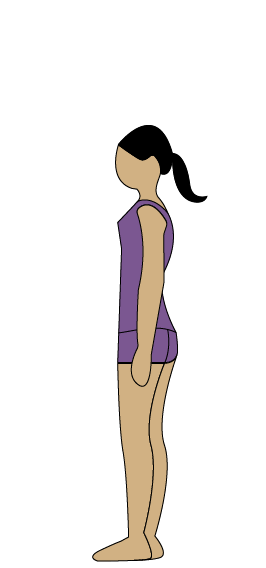
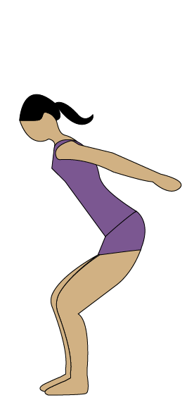
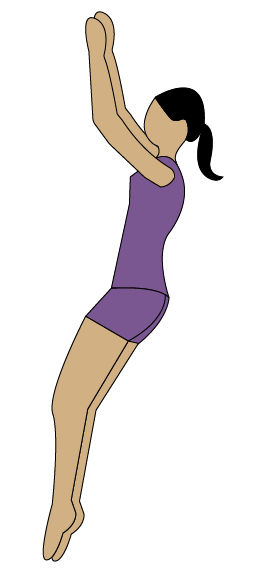
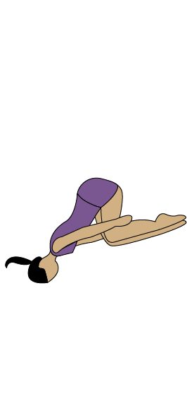
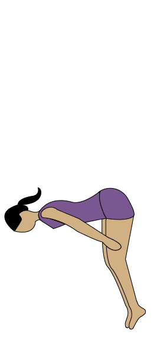
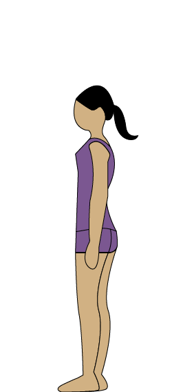

-
Ten steps to successful flipping

-
Step One - Begin standing straight up with your hands by your side.
Disclaimer: Going through this tutorial does not make you ready to tumble! Always use proper safety practices and work up to this skill level. Consider using a spot for the first couple of attempts.Begin standing straight up with your hands by your side.

Disclaimer: Going through this tutorial does not make you ready to tumble! Always use proper safety practices and work up to this skill level. Consider using a spot for the first couple of attempts. -
Step Two - Swing your arms back forcefully to gain momentum.
Begin standing straight up with your hands by your side.
 -
Step Three - Swing your arms to your ears, beginning your extension upwards.
Swing your arms to your ears, beginning your extension upwards.
 -
Step Four - The force of your arms will begin the rotation. Bring your hips upward to your arms, lifting your body into the air.
The force of your arms will begin the rotation. Bring your hips upward to your arms, lifting your body into the air.

-
Step Five - In a tight tuck position, rotate quickly!
In a tight tuck position, rotate quickly!

-
Step Six - Continue staying tight and rotating. Remember to squeeze to ensure fast rotation!
Continue staying tight and rotating. Remember to squeeze to ensure fast rotation!

-
Step Seven - Your rotation is coming to an end, but you still need to stay tight!
Your rotation is coming to an end, but you still need to stay tight!
 -
Step Eight - Untuck your legs in preparation for landing. Keep your arms by your legs.
Untuck your legs in preparation for landing. Keep your arms by your legs.
 -
Step Nine - Stay rounded with chest over knees during the landing.
Stay rounded with chest over knees during the landing.

-
Step Ten - Land and stand!
Land and stand!
 -
Quiz!